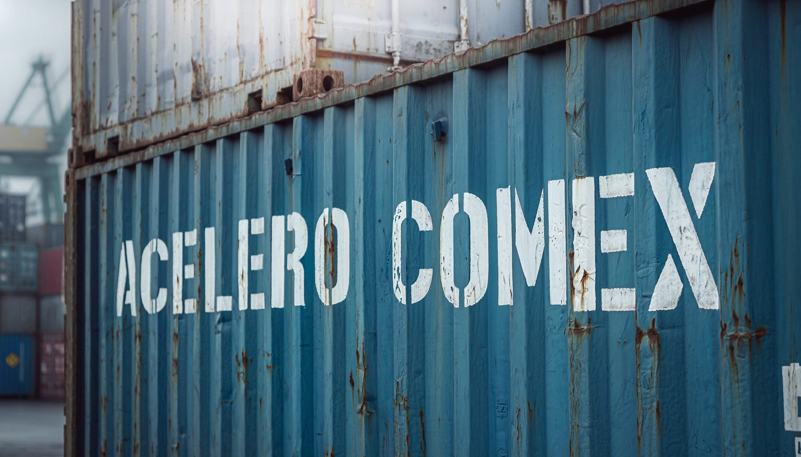
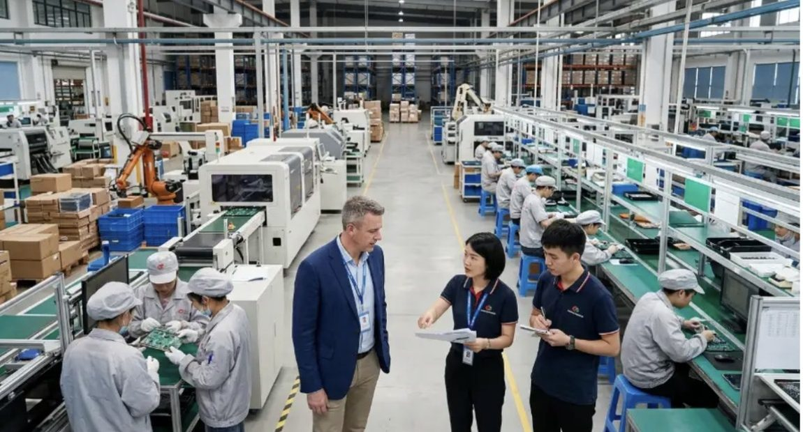
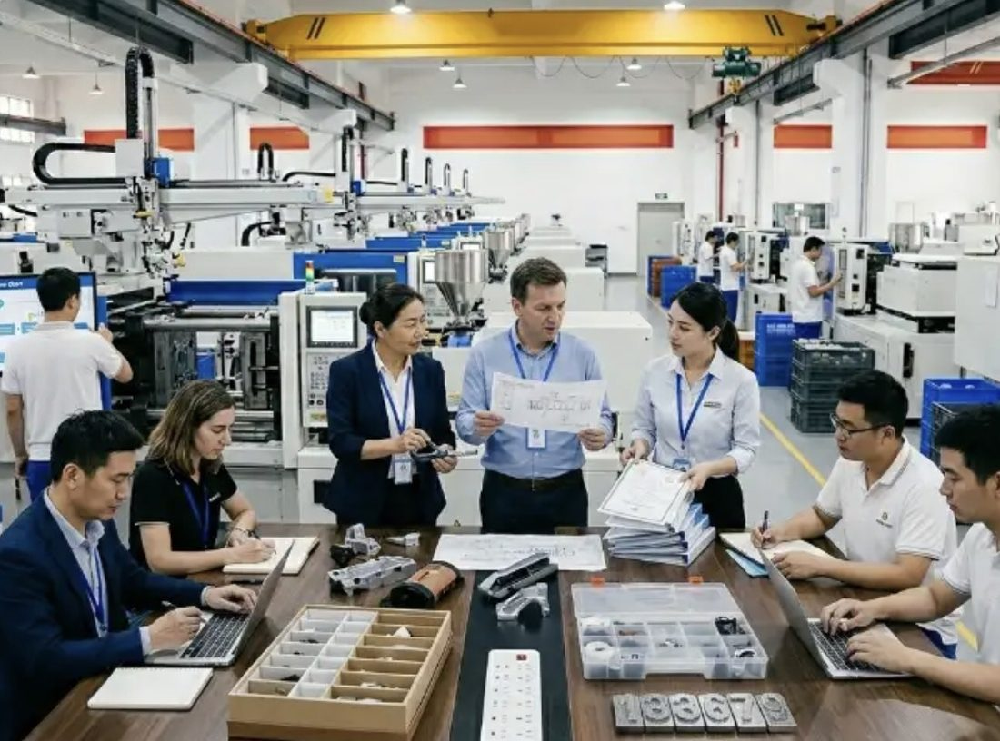
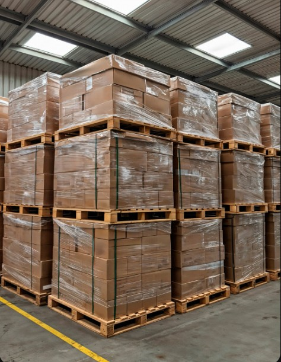

Missão
Tornar o mundo acessível para quem produz e vende no Brasil.
Reduzir a distância entre a sua empresa e qualquer fornecedor ou cliente do planeta, com clareza total de custo, prazo e risco.
Gestão completa de comércio exterior
Gestão completa de importação e exportação com eficiência e confiança — do pedido ao fornecedor até a carga na sua doca, com custo fechado antes de você aprovar a compra.

01 — Sobre
A ACELERO COMEX nasceu de uma inconformidade simples: empresas brasileiras perdem margem, tempo e noites de sono porque a operação internacional é tratada como um quebra-cabeça de fornecedores desconectados — um faz a cotação, outro o frete, outro a aduana, e ninguém responde pelo resultado.
Nós reunimos tudo sob um único time, um único processo e um único responsável. Você fala com uma pessoa; nós coordenamos o resto do planeta.
Missão
Reduzir a distância entre a sua empresa e qualquer fornecedor ou cliente do planeta, com clareza total de custo, prazo e risco.
Visão
Não a maior. A mais confiável — aquela em que a diretoria planeja o trimestre inteiro sem medo do que vem do outro lado do oceano.
Valores
Se der problema, você fica sabendo por nós — antes de virar prejuízo. Sem taxa escondida, sem “isso não é com a gente”.
02 — Serviços
Você pode contratar uma frente isolada ou entregar toda a operação ao nosso time. Na prática, quem começa por uma acaba migrando tudo — porque o ganho está justamente em ninguém poder empurrar a responsabilidade para o vizinho.
Da homologação do fornecedor à nacionalização — e, na outra direção, da adequação de rótulo ao certificado de origem. Simulação de landed cost antes de você aprovar a compra, não depois da fatura chegar.
Ganho Você decide comprar sabendo o custo final na sua prateleira, com margem calculada.
Simular minha operação→Marítimo, aéreo, rodoviário e multimodal com contratos negociados em volume. Escolhemos o modal pelo seu calendário de vendas, não pela conveniência do agente — e monitoramos cada etapa até a doca de destino.
Ganho Frete competitivo com espaço garantido em alta temporada e ETA que você pode prometer ao seu cliente.
Cotar meu frete→Equipe própria de despacho, documentação conferida antes da chegada e relacionamento diário com os terminais. Quando algo cai em canal amarelo ou vermelho, já sabemos o que fazer — e você é avisado no mesmo dia.
Ganho Menos dias de armazenagem e demurrage, que é onde o lucro do embarque evapora em silêncio.
Destravar uma carga→Diagnóstico tributário e logístico da operação atual: revisão de NCM, regimes especiais, drawback, ex-tarifário, acordos comerciais e desenho de rota. É a frente que costuma se pagar antes do terceiro embarque.
Ganho Economia recorrente em cada operação futura, com relatório que a sua contabilidade consegue auditar.
Pedir um diagnóstico→03 — Processo
Cada etapa tem entregável, prazo e responsável definidos. Você sempre sabe em que ponto está a sua operação e o que acontece a seguir — é essa clareza que elimina o medo de importar.
Dias 1 a 7
Diagnóstico de produto, NCM, volume e sazonalidade; desenho de modal, incoterm, regime tributário e cronograma. Se houver habilitação de RADAR ou licença pendente, resolvemos agora — antes de qualquer compromisso com o fornecedor.
Entregável Plano operacional com custo-alvo e prazo-alvo.
Semanas 2 a 4
Fornecedor homologado por auditoria documental e checagem de capacidade produtiva, pedido firmado com termos protegidos e follow-up semanal da linha. Você acompanha o avanço sem precisar entrar em fuso horário nenhum.
Entregável Dossiê do fornecedor + cronograma de produção monitorado.

Antes do embarque
Conferimos quantidade, especificação e embalagem na origem, com laudo fotográfico. O embarque só é liberado depois disso — divergência encontrada na fábrica custa uma fração do que custa depois de o contêiner chegar ao Brasil.
Entregável Relatório de inspeção com fotos e laudo de conformidade.

Trânsito internacional
Booking, documentação, seguro e rastreamento em tempo real. Você acompanha pelo painel e recebe alerta proativo em qualquer desvio de rota, atraso de navio ou mudança de janela portuária — antes que vire problema de agenda.
Entregável Acesso à torre de controle + alertas automáticos.
Chegada
Registro antecipado, desembaraço, liberação e transporte final até a sua doca. Fechamos com o custo real do embarque comparado ao orçado — para que a próxima operação seja ainda mais precisa que esta.
Entregável Carga na sua doca + relatório de fechamento financeiro.

Quer ver este processo aplicado ao seu produto e à sua NCM?
Agendar diagnóstico gratuito04 — Resultados
Indicadores consolidados da carteira ativa. Na reunião de diagnóstico mostramos a memória de cálculo — número sem origem não vale nada.
05 — Cases
Empresas reais, com nomes preservados por acordo de confidencialidade. Os números foram auditados em conjunto com o time financeiro de cada cliente.
Indústria de autopeças · SP
Perdia venda por ruptura de estoque e pagava aéreo emergencial quase todo mês. Reestruturamos o mix de modais, criamos calendário de embarques consolidados e antecipamos o registro aduaneiro.
E-commerce de eletrônicos · SC
Três NCMs estavam classificadas de forma conservadora havia quatro anos. Refizemos o enquadramento com parecer técnico, aplicamos ex-tarifário em uma linha e reabrimos a operação com o custo correto.
Alimentos & agro · PR
Cliente nunca havia exportado. Cuidamos de habilitação, certificados sanitários, adequação de rótulo, contrato internacional e do primeiro embarque — com o comprador pagando por carta de crédito.
A diferença não foi o frete mais barato. Foi parar de descobrir problema depois que ele já tinha virado custo. Hoje eu sei na segunda-feira o que vai acontecer no mês inteiro.
Já tínhamos trabalhado com três despachantes. O que mudou aqui foi ter alguém que entende do meu produto e responde por ele. Nunca mais fiquei no meio de uma discussão entre agente e terminal.
Achávamos que exportar era coisa para empresa grande. Em pouco mais de dois meses estávamos embarcando. A burocracia, que me travava, simplesmente deixou de ser um problema meu.
O diagnóstico apontou uma classificação fiscal errada que a gente carregava há anos. Só isso já pagou o contrato de um ano inteiro. O resto virou lucro.
06 — Por que fazemos
O comércio exterior no Brasil foi construído para ser difícil. Uma linguagem própria, uma burocracia que muda sem aviso e uma cadeia de intermediários em que quase ninguém tem incentivo para dizer a verdade sobre custo e prazo.
O resultado é que empresas excelentes desistem de importar melhor, ou nunca experimentam vender lá fora. Perdem margem para concorrentes que não são melhores — apenas têm uma operação internacional mais organizada.
Existimos para apagar essa desvantagem. Cada operação que simplificamos é uma empresa que cresce sem trocar previsibilidade por oportunidade. No longo prazo, queremos que importar e exportar seja tão banal quanto emitir uma nota fiscal.
07 — Garantias
Diagnóstico Acelero — sem custo
Não é uma reunião comercial disfarçada. É uma análise técnica da sua operação atual, feita por um especialista sênior, com número na tela. Se depois disso você quiser tocar tudo sozinho, o material é seu, sem contrapartida.
Atendemos um número limitado de novas operações por mês para manter o padrão de acompanhamento. Vagas do ciclo atual: 4.
08 — Dúvidas
Se a sua dúvida não estiver aqui, mande no WhatsApp. Respondemos com a resposta técnica, mesmo quando ela não favorece a venda.
Dá, e é o cenário mais comum entre os nossos clientes novos. Cuidamos da habilitação no RADAR/Siscomex, do enquadramento tributário, da escolha do fornecedor e do primeiro embarque inteiro. Você participa das decisões comerciais; a parte técnica fica com a gente.
Não trabalhamos com volume mínimo rígido, e sim com viabilidade. Operações a partir de cerca de um contêiner por trimestre, ou cargas aéreas recorrentes, já costumam ter ganho suficiente. No diagnóstico dizemos com clareza se ainda não é o seu momento — perder tempo com uma operação que não fecha a conta é ruim para os dois lados.
Combinamos previamente uma taxa de gestão por embarque ou um fee mensal, conforme o volume. Custos de terceiros — frete, seguro, armazenagem, tributos, taxas portuárias — são repassados com a fatura original em anexo. Sem comissão embutida: se ganhamos algo de um parceiro, isso é declarado e abatido.
Garantimos o SLA das etapas sob nossa gestão, definido em contrato. Greve portuária, evento climático ou fiscalização extraordinária estão fora do controle de qualquer operador — mas nesses casos você é avisado imediatamente, com plano B na mesa. Quando o atraso decorre de falha nossa, a taxa de gestão daquele embarque não é cobrada.
Faz parte da operação e não é motivo para pânico. Nossa documentação é conferida antes da chegada justamente para reduzir essa chance — e, quando acontece, o time de aduana assume a interlocução com a Receita e com o terminal no mesmo dia. Hoje, 98,4% das nossas cargas são liberadas em canal verde.
Sim, e também com Índia, Vietnã, Turquia, Estados Unidos, México e União Europeia. Temos parceiros de inspeção na origem, o que significa que a conformidade do seu produto é verificada antes do embarque — não quando o contêiner já está no Brasil.
Não. Muitos clientes começam apenas pela consultoria estratégica ou pela logística, mantendo o despachante atual. Se em algum momento fizer sentido consolidar, a transição é feita por nós, sem interromper embarques em curso.
Pela torre de controle digital: status de cada embarque, documentos, custo acumulado e ETA atualizada, no computador ou no celular. Além disso, você tem canal direto com o gerente de conta, com resposta em até 4 horas úteis.
É. Investimos esses 45 minutos porque, na prática, é a nossa melhor demonstração de competência. Você sai com o material em mãos, tendo contratado ou não. O que pedimos em troca é que a pessoa na reunião tenha acesso aos números da operação — sem isso, a análise vira suposição.
09 — Contato
Preencha o formulário e um especialista sênior — não um atendente de triagem — entra em contato em até 1 dia útil para agendar o diagnóstico. Se preferir, chame direto no WhatsApp.
Sem compromisso e sem custo. Você sai da reunião com o mapa da sua operação, tendo contratado ou não. Seus dados não são compartilhados com terceiros.